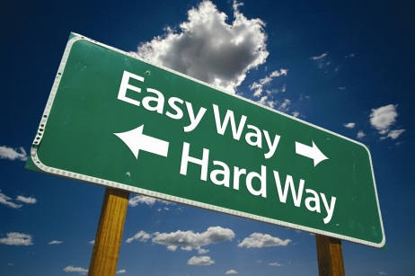

Layouts, templates, partials, helpers and static assets.
We use sass, haml and coffe script. We also include action_view for easier displaying images for ex.
= image_tag 'easy-way.jpg'

There are shared helper for ruby, sass and coffee. So Dont Repeat Your self! The copyright for ex.
= copyright 'ehc'
© 2015 by ehc
@import "bootstrap/variables" @import "bootstrap/mixins" @import "mixins/normalize" * font-family: 'Open SANS',sans-serif .content-left, .content-right +make-xs-column(12) +make-sm-column(6)
@import "mixins/css3" @import "mixins/helper" +headlines +text-shadow(1px, 1px, 3px, #555) h1 +bold img +transition(all, .3s, ease-in-out)
@import "mixins/buttons" .button.magenta +make-magenta-button() +zoom-on-hover
@import "mixins/arrows" .arrow-up +arrow-up(60px, 20px, #62bc19) +inline-block
text styled from inline sass
= with_sass do
:plain
p.inline-sass
color: green
= with_coffee do
:plain
$('.inline-coffee').click ->
alert 'button clicked' just put a bower.json into your public folder and it will be resolved at generation time. don't forget to install bower 'npm install -g bower\' http://bower.io/